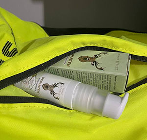

Elena - buvusi manekenė. Ji dirbo per mados savaites ir daug keliavo po pasaulį. Nuo 24 metų amžiaus jai atsirado artritas ir pasaulis kardinaliai pasikeitė.
Senojo gyvenimo pabaiga
Labas, aš Elena, dabar man 27 metai. Nuo 24 metų amžiaus mano sąnarius ardo reumatinis artritas. Mano gyvenimas virto košmaru. O juk anksčiau aš dirbau modeliu, buvau aktyvi ir pasitikiti savimi.
Kai atsirado pirmieji požymiai - sukaustymas rankose - nesupratau, kas su manimi vyksta. Kelias valandas aš negalėdavau pakelti rankos ir sulenkti kelio, o kartą naktį aš prabudau dėl stipraus skausmo klubo sąnaryje.
Aš nuėjau pas specialistą, jis man patarė išgerti nuskausminamųjų, ir greitai viskas praeis. Pasakė, kad jauniems žmonėms dabar taip būna. Aš apsidžiaugiau ir pasinėriau į darbą: daug filmavausi ir važinėjau po įvairius miestus.
Kiek užbėgdama į priekį, pasakysiu, kad po kelių mėnesių man teko sugrįžti pas šį specialistą ir jis pripažino, kad neteisingai man pastatė diagnozę. Aš jam papasakojau, per kokius pragaro ratus man teko praeiti, o jis net neatsiprašė ir tiesiog pasakė: "Būna visaip".
Apytiksliai po metų man prasidėjo siaubingi skausmai kojose ir rankoe. Rytais aš tiesiog negalėdavau vaikščioti ir judėti. Nuėjo iki tokio lygio, kad aš negalėdavau pati apsirengti, kol nepradeda veikti nuskausminamieji. Pamenate skausmą, kai stipriai susimušei? Su tokiu šaižiu skausmu man tekdavo gyventi praktiškai pastoviai.
Po metų skausmas rankose ir kojose padidėjo.
Po daugybės tyrimų ir apsilankymų pas ekspertus, aš galiausiai patekau pas specialistą, kuris užsiėmė reumatinių patologijų terapija. Pirmojo apsilankymo metu aš verkiau, daugiau nebeturėjau jėgų kęsti skausmą.
Tarp kitko, pas ją reumatinio artrito terapiją praėjo ir mano močiutė. Ji sena, sunkiai vaikšto. Aišku, aš buvau įsitikinus, kad man negali būti tokių problemų, juk aš dar jauna tam.
Bet paaiškėjo, kad reumatinis artritas amžiaus nepaiso. Jis dažniausiai paveldimas.
Kai tik specialistė pamatė mano rentgeno nuotraukas, iš karto pasakė:"O, tai pas jus čia beveik viskas iširo! Be hormonų niekaip." Aš pradėjau verkti, o ji įkišo man katalogą su invalido vežimėliais ir pasakė: "Rinkitės, po pusmečio jums gali jo prireikti."
Atskirtis ir susitaikymas
Sunkiausia buvo prisipažinti, kad sergu. Labai nenorėjau tikėti, kad negalėsiu šokti ir avėti aukštakulnių, kaip anksčiau. Nenorėjau tikėti ir tuo, kad negalėsiu aktyviai sportuoti ir niekada nebėgsiu maratono. Net paprasčiausias bėgimas parke man staiga buvo uždraustas.
Nepaisant skausmo, Elena toliau dirbo modeliu.
Todėl man viską skaudėjo, pastoviai būdavau pikta ir irzli. Labai agresyviai reagavau į skundus, kaip: "Oi, man buvo sunki diena, aš susipykau su viršininku". Tuomet aš sakydavau: "Tu bent gali normaliai vaikščioti! Tu iš viso neturi priežasties bliauti?" Nors aš supratau, kad taip negalima. Nežinau, kaip mano artimieji visą tai iškentė.
Aš toliau pagal tvarkaraštį leidau hormonus, gėriau nuskausminamuosius, tepiausi tepalais. Skausmas pradėjo mažėti, bet atvyko šalutiniai sunkių vaistų poveikiai:pykinimas, galvos svaigimas, gedo dantys, slinko plaukai, pradėjo augti svoris... Rezultate dėl hormoninių preparatų man išsivystė osteoporozė. Mano kaulai sulyg kiekvieną dieną tapdavo vis trapesni. Vienas neatsargus žingsnis ir lūžis. Tai siaubinga, kai tu negai gyventi pilnaverčio gyvenimo. Aš jaučiausi stikline vaza, kuri stovi ant stalo krašto...
Bet vis dėl to aš apsisprendžiau tęsti darbą ir išskridau mados savaitei į Milaną. Kiekviena diena prasidedavo nuskausminamaisiais. Kartais mano sąnariai nejudėdavo ir man tekdavo pajungti kitus raumenis, mokytis judėti kitaip.
Kartą, kai vyko filmavimas, aš pradėjau nejausti kairės kūno pusės. Tuomet aš supratau, kad su šiuo gyvenimu teks atsisveikinti.
Baimės ir netikėtas išsigelbėjimas
Reumatinis artritas - visam gyvenimui. Aš labai jo bijojau. Mačiau, ką jis daro su sąnariais ir kaip žmonės praranda viltį. Jų rankos ir kojos tampa baisios, jie tampa bejėgiai.
Elena bijojo, kad būdama tokia jauna jau turės bjaurų kūną.
Ypatingai baisu apie tai galvoti, kai tau du metai jau nebesilenkia alkūnė, pradėjo deformuotis kojų pirštai, tu pradedi šlubuoti ir vaikštai su pagaliuku. Draugai juokais pradėjo mane vadinti Daktaru Chausu.
Aš verkdavau naktimis ir svajojau apie remisiją. Mes su specialistu išbandėme visas terapijos formas - NIEKAS nepadėjo.
Kartą užėjau į orumą, kur renkasi žmonės su tokia pat problema. Radau ten daug įkvepiančių istorijų apie tai, kaip gyvena panašūs į mane žmonės.
Viena istorija mane įkvėpė ypatingai. Mergina kovojo su reumatiniu artritu virš 10 metų, kartą jai pasidarė taip blogai, kad ji jau nebegalėjo dirbti vizažiste. Bet ji taip mylėjo gyvenimą ir savo darbą, kad darė viską, kas įmanoma, kad atsikratytų kliūties: laikėsi dietos, užsiėmė joga, vaikščiojo į masažus.
Rezultate jai pavyko pasiekti remisijos vieno preparato dėka. Ji vėl dirba ir jie su vyru laukiasi vaiko.
Nusprendžiau, kad neturiu, ką prarasti, ir irgi užsisakiau šį preparatą. Jis vadinasi . Nekantravau, kad galėsiu pradėti, bet, laimei, gelis atėjo labai greitai - vos už poros savaičių. Aš sumokėjau už siuntinį ir atsiėmiau jį iš artimausio pašto skyriaus.
Tepiausi pagal instrukciją: 2 kartus per dieną plonu sluoksniu ant pažeistų ruožų. Pirmą laiką lyg tai viskas buvo kaip buvę, bet už kelių savaičių skausmas beveik praėjo, grįžo lankstumas, dingo rytinis sukaustymas.
Dabar mano patologija remisijoje ir dažnai aš net pamirštu, kad iš viso turiu kažkokių problemų su sąnariais, Gyvenu pilnavertį gyvenimą: vaikštau į sporto salę, dirbu, užsiimu namų ruoša.
Anksčiau viena pagrindinių baimių buvo - kad negalėsiu turėti vaikų. Kadangi, vartojant preparatus nuo reumatinio artrito, pastoti draudžiama. Dabar nevartoju jokių preparatų ir galiu tapti mama. Taip, yra rizika, kad artritą gali paveldėti vaikas, bet tikiu geriausiu. O jei nepataisoma vis dėl to atsitiks, mano vaikutis bet kuriuo atveju nekęs tokių pat skausmų, kaip aš.
Linkiu visiems žmonėms, sergantiems reumatiniu artritu, nenuleisti rankų, kaip sunku bebūtų. Bandykite įvairius metodus. Išbandykite , galimai, jis jums padės taip pat, kaip padėjo man!
Ona Skarienė, reumatinių patologijų specialistė. Darbo patirtis - 14 metų
Komentarui gauti mes kreipėmės į Oną Skarienę, specialistę, pas kurią gydėsi mūsų herojė Elena:
- Tikrai, visuomenėje yra nuomonė, kad reumatiniu artritu jauni žmonės sirgti negali. Tuo tarpu, kai šios patologijos pikas yra 30-55 metų. Dažniausiai su šia problema susiduria moterys.
Reumatinio artrito terapijos sunkumas yra tame, kad jis sunkiai diagnozuojamas ir jo neįmanoma atsikratyti.
Nepasiekus remisijos, sąnariai pradės labai greitai irsti. Ir ne tik jie. Apie pusė sergančių reumatiniu artritu žmonių susiduria su plaučių, širdies ir inkstų patologijomis.
Viena pagrindinių terapijos metodų - hormonai, bet dažnai jie nesuteikia norimo rezultato ir turi aibę šalutinių poveikių.
Elena man nesakė, kad ruošiasi praeiti kursą . Todėl aš labai nustebau, kai pamačiau jos tyrimų rezultatus po planinės apžiūros. Po šio preparato kurso jai pavyko pasiekti remisijos ir sustabdyti sąnarių ir organizmo irimą.
Nusprendžiau sužinoti daugiau apie šį preparatą ir jis mane labai nustebino. Pasirodė, kad turi kompleksišką poveikį. Jis gali nuimti požymius ir pašalinti jų atsiradimo priežastį. Ir viskas dėka sudėties:
- ARNIKA MONTANA EKSTRAKTAS - turi priešuždegiminių ir analgetinių savybių. Jis taip pat turi antiseptinį ir vazoprotekcinį poveikį.
- MENTOLAS - turi silpną antiseptinį poveikį, vėsina odą, taip pat turi vietinį anestezinį poveikį.
- EUKALYPTUS ETERINIS ALIEJUS - turi antiseptinių ir priešuždegiminių savybių, nes jame yra cineolio. Jis taip pat stabdo bakterijų augimą ir turi vėsinantį poveikį odai ir gleivinėms.
- KOFEINO ALIEJUS - naudojamas esant įvairių etiologijų sąnarių skausmams, įskaitant reumatoidinį artritą, raumenų uždegimą, sausgyslių uždegimą ir nervų skausmą.
Apie efektyvumą byloja ir apklausa, kurią platintojas atliko tarp 657 pirkėjų su skirtingu sąnarių problemų lygiu. Pagal sąlygas, respondentai vartojo gelį ne trumpiau 30 dienų. Pagal gautus duomenis buvo sudaryta statistika:
- galima gauti vaistinėje?
- Taip iki tam tikro laiko preparatas buvo parduodamas vaistinėse, bet padaugėjo padirbimų atvejų, todėl platintojas atsisakė pardavinėti preparatą vaistinėse. Šiai dienai galima gauti tik internetu. Norint patraukti pirkėjus, platintojas nusprendė įvykdyti vienkartinę akciją, todėl dabar galima nusipirkti su 50% nuolaida.
Tam reikia:
- Gyventi ES teritorijoje.
- Užpildyti žemiau pateiktą užsakymo forma iki (imtinai), kol prekių dar yra
- Atsiliepti į operatoriaus skambutį.
- Atsiimti ir apmokėti siuntinį artimiausiame pašto skyriuje.
Tikiuosi, galės padėti žmonėms, sergantiems reumatiniu artritu, grįžti į normalų gyvenimą.
DĖMESIO: Platintojo vykdomos akcijos rėmuose galima gauti su 50% nuolaida. Tam reikia užpildyti žemiau pateiktą užsakymo formą iki (imtinai). Akcinių prekių kiekis ribotas.

Sergu reumatiniu artritu nuo 18 metų, tad labai gerai suprantu Eleną. Irgi ilgai kankinausi ir tik tapo mano išgelbėtoju.

Įdomu buvo paskaityti, ačiū!
Kaip užsisakyti? Aš nesupratau.
Užpildykite aukščiau esančią užsakymo formą ir mes jums perskambinsime.
Tikrai padeda reumatinių skausmų atvejais, kai sąnarius maudžia, keičiantis orui. Gerai, kad dar turi šaldymo efektą iš karto, kai užsitepi.
Man irgi labai padeda. Darbas stovimas, alkūnės ir keliai labai skauda. O šis preparatas tiesiog išsigelbėjimas. Tik kas iš karto juo pasinaudoju, kadangi jis sąnariams teikia momentinį lengvumo pojūtį Pirkau čia.

Alkūnės nedavė ramybės. Ieškojau gelį arba kokį tepalą, kad nebūtų jokio cheminio kvapo. Pas pažįstamą pamačiau gelį. Ji pasakė, kad jai jis padeda. Štai ir sau užsisakiau. Man irgi padėjo, alkūnių nebeskauda. Be to, gelis maloniai kvepia ir suteikia šviežumo jausmą.
Vau! Reikia užsisakyti, kol yra nuolaida ir dar visko nepardavė.
pateisino lūkesčius. Anksčiau vyras labai kelių skausmus jautė. O jis pas man stambus, sunku jam buvo. Dabar viskas gerai, aš patenkinta.
Baigiau kursą su . Sugrįžo lankstumas, dingo skausmas raumenyse, taigi gelis puikus. Bet kokiame amžiuje.
Man anūkas šį gelį užsakė. Alkūnės ir riešai tiesiog neleido ramiai gyventi. Kažkur mėnesį laikiausi kurso ir viskas palaipsniui dingo. Viskas, aišku, individualu, bet aš rekomenduočiau išbandyti.

Siuntinys atkeliavo labai greitai, vėliau papasakosiu, ar padėjo.
Pas mus šokių treneris šį gelį rekomenduoja. Sako - geriausia sergančių sąnarių profilaktika.